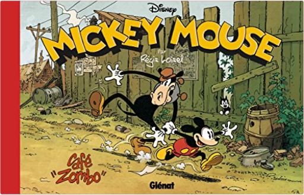

|  mickey mouse - café zomborégis loisel Le grand retour de Loisel !
1930, les États-Unis subissent la Grande Dépression. Comme tous les matins, Mickey et Horace font la queue devant le bureau pour l embauche. Sauf qu une fois de plus, il n y a rien pour eux... Dépités, ils décident d aller rendre visite à leur ami Donald pour se changer les idées. Au programme : camping au bord de la rivière avec leurs compagnes Minnie et Clarabelle. Sauf qu à leur retour, ils ont la surprise de découvrir que la ville a complètement changé. Rock Fuller, un banquier véreux, a racheté toutes les propriétés du quartier et compte les raser afin de construire un terrain de golf. Pire encore, les travailleurs, embauchés en masse pour ce grand projet, sont devenus accros à une mystérieuse substance, ' café Zombo ', qui fait d eux de véritables zombies !
C est l événement BD de l année : pour la première fois depuis Peter Pan, Loisel revient au scénario, dessin et couleurs ! Et pour ce grand retour, l artiste s offre un rêve : livrer son hommage au Mickey de Floyd Gottfredson des années 1930 dont il est un fan absolu. Faisant le choix du format « à l italienne », l auteur retrouve ainsi l esprit des strips horizontaux caractéristiques de l époque. Il livre une aventure rythmée et pleine d humour où, comme souvent chez lui, les péripéties de ses personnages et la fausse légèreté du récit sont un prétexte pour aborder des thématiques profondes. Qui aurait imaginé Mickey traverser la crise de l emploi dans l Amérique post-1929, subissant les dérives du capitalisme et l aliénation des masses laborieuses ?!
Café Zombo est un ouvrage somptueux et hors-norme, tant par la forme que par le fond, dans lequel Loisel rappelle l étendue de son génie graphique son sens du détail, son encrage à nul autre pareil et le dynamisme de sa mise en scène et réussit l exploit de rendre un hommage à la fois respectueux et intimement personnel. |


 Made with Delicious Library
Made with Delicious Library